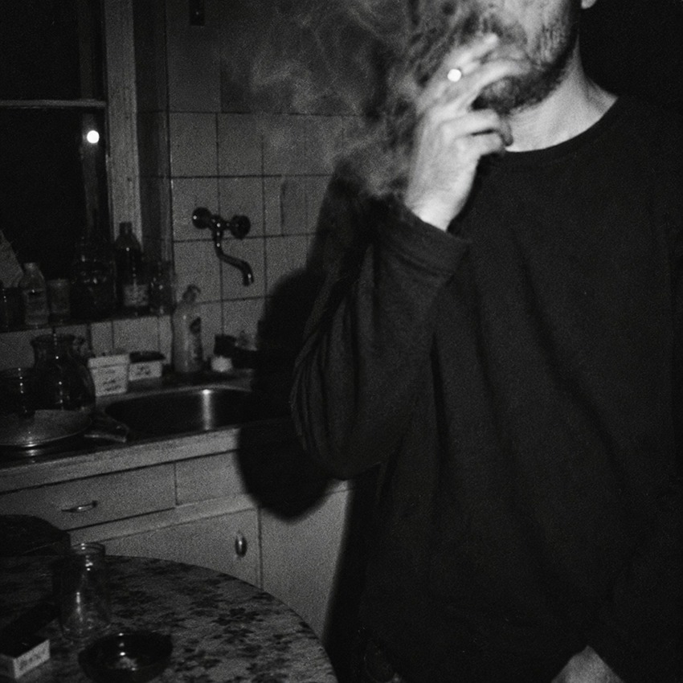

🔍 Inspecionar Grão
ATO I / 04
60 × 90 cm • Fine Art
NOTURNA I — O Fumo
A Cozinha
Tensão Curatorial
O gesto interrompido. A identidade é ocultada para que o gesto do fumo e a atmosfera fria da pia de inox e azulejos institucionais se tornem os protagonistas da cena.
Luz: Flash Direto / Rebatido
Foco: Rosto sob fumaça
Filme: Tri-X 400 Forçado
Ano: 2026